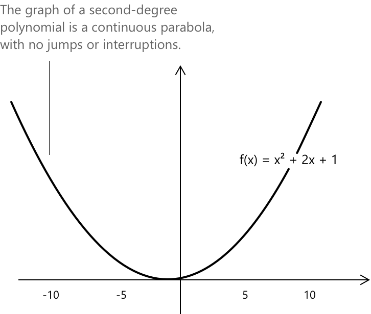
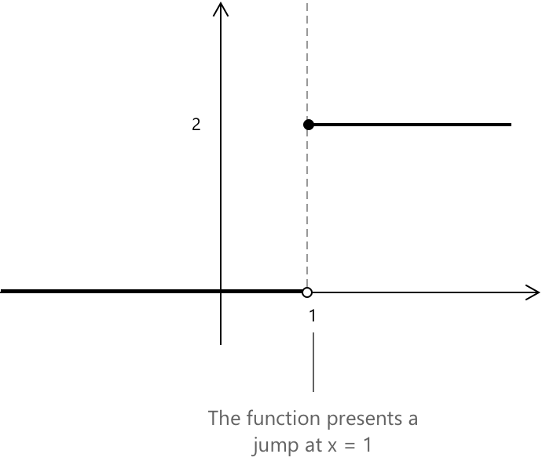
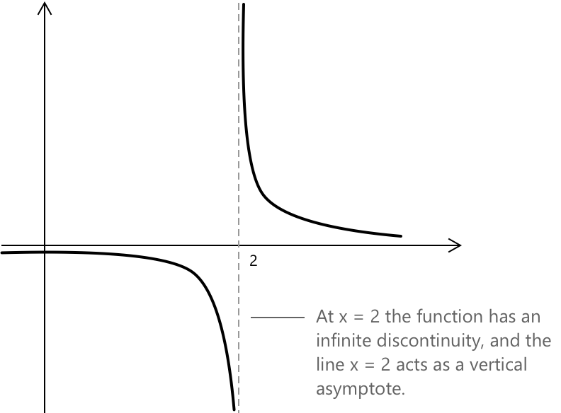

Розриви дійсних функцій
Вступ
Неперервність — це властивість функції, при якій малі зміни аргументу призводять до відповідно малих змін значення функції в околі заданої точки. Якщо така локальна стабільність відсутня, функція вважається розривною. Розриви зазвичай класифікують на три окремі типи:
- Усувний розрив виникає, коли границя існує і є скінченною, але функція або не визначена в цій точці, або її значення не дорівнює цій границі.
- Стрибкоподібний розрив присутній, коли і лівостороння, і правобічна границі існують і є скінченними, але ці границі не рівні між собою.
- Нескінченний розрив виникає, коли принаймні одна з однобічних granic є нескінченною, що призводить до розбіжності функції біля точки замість наближення до скінченного значення.
Розрив у точці \(x_0\) може виникнути рівно одним із трьох взаємовиключних способів, описаних вище. Точка не може одночасно мати більше одного типу розриву.
Кожен із цих типів буде детально розглянуто в наступних розділах. У цьому обговоренні \( f \) позначає дійснозначенну функцію, а \( x_0 \) представляє точку в її області визначення або точку, в якій функція може бути не визначена.
Нагадування про неперервність
Функція \( f \) є неперервною в точці \( x_0 \), якщо границя при \( x \to x_0 \) існує, є скінченною і збігається зі значенням функції в цій точці. Ця умова виражається наступною границею:
\[ \lim_{x \to x_0} f(x) = f(x_0) \]
Поліноми становлять фундаментальний клас елементарних неперервних функцій. Ці функції представляють гладкі криві на площині та не мають точок розриву. Нижче наведено графік квадратичної функції \( x^2 + 2x + 1 \), яка представляє собою параболу:

Розрив у точці \( x_0 \) виникає щоразу, коли ця рівність не виконується, і конкретний спосіб, за якого умова не виконується, визначає тип розриву.
Інтуїтивно, функція є неперервною, якщо її графік можна намалювати на площині без будь-яких перерв, розривів або раптових стрибків.
Усувний розрив
Усувний розрив виникає, коли функція має чітко визначену скінченну границю в точці \( x_0 \), проте значення функції в цій точці або не визначене, або не збігається з цією granicю. Формально, функція \( f \) має усувний розрив у точці \( x_0 \), якщо наступна границя існує і є скінченною:
\[\lim_{x \to x_0} f(x) = \ell \in \mathbb{R}\]
Крім того, виконується принаймні одна з наступних умов:
- \( f(x_0) \) не визначена.
- \( f(x_0) \neq \ell \).
У таких випадках розрив можна усунути, переозначивши функцію в одній точці наступним чином: \[ g(x) = \begin{cases} \ell & \text{якщо } x = x_0 \\[6pt] f(x) & \text{якщо } x \ne x_0 \end{cases} \]
З таким означенням функція \( g \) стає неперервною в точці \( x_0 \). Термін «усувний» стосується того факту, що розрив може бути усунений таким чином.
Усувні розриви зазвичай виникають у раціональних функціях, що містять множники, які можна скоротити, що призводить до появи «дірки» на графіку. Вони також можуть бути присутні у функціях, заданих відрізками, або у функціях, де значення в одній точці було змінено, за умови, що границя в цій точці існує і є скінченною.
Приклад 1
Розглянемо функцію, задану наступним раціональним виразом, яка не визначена при \( x = 1 \):
\[ f(x) = \frac{x^2 – 1}{x – 1} \]
Розкладання чисельника на множники демонструє, що вираз спрощується для всіх значень \( x \), крім \(1\), оскільки при \(x=1\) знаменник дорівнює нулю, і функція стає невизначеною.
\[ x^2 – 1 = (x – 1)(x + 1) \]
Для всіх \( x \neq 1 \) функція еквівалентна лінійній функції: \[ f(x) = x + 1 \]
Хоча функція не визначена при \( x = 1 \), границя при наближенні \( x \) до \(1\) існує і є скінченною:
\[ \lim_{x \to 1} \frac{x^2 – 1}{x – 1} = 2 \]
Це демонструє, що \( x = 1 \) є усувним розривом, оскільки графік відповідає прямій \( y = x + 1 \) з однією відсутньою точкою у \( (1,2) .\)
Перевизначення функції в цій точці шляхом присвоєння їй значення границі усуває розрив: \[ g(x) = \begin{cases} 2 & \text{якщо } x = 1 \\[6pt] f(x) & \text{якщо } x \ne 1 \end{cases} \]
З цією модифікацією функція є неперервною при \( x = 1 \).
Розрив першого роду (стрибкоподібний розрив)
Стрибкоподібний розрив виникає, коли і ліва, і права границі в точці \( x_0 \) існують і є скінченними, проте ці границі не рівні між собою. Формально, \( f \) має стрибкоподібний розрив у точці \( x_0 \), якщо:
\[ \begin{align} \lim_{x \to x_0^-} f(x) &= \ell_1 \in \mathbb{R} \\[6pt] \lim_{x \to x_0^+} f(x) &= \ell_2 \in \mathbb{R} \\[6pt] \ell_1 &\neq \ell_2 \end{align} \]
У цьому випадку границя \( \lim_{x \to x_0} f(x) \) не існує. Функція наближається до двох різних скінченних значень залежно від напрямку наближення. На відміну від усувного розриву, цей тип не можна усунути шляхом перевизначення функції в одній точці, оскільки розбіжність є властивою локальній поведінці.
Приклад 2
Щоб проаналізувати стрибкоподібний розрив, розглянемо наступну просту функцію, яка має розрив у точці \(x = 1.\)
\[ f(x) = \begin{cases} 0 & \text{якщо } x < 1 \\[6pt] 2 & \text{якщо } x \ge 1 \end{cases} \]

Для значень \(x\), що наближаються до \(1\) зліва, функція залишається сталою і дорівнює \(0\). Отже:
\[ \lim_{x \to 1^-} f(x) = 0 \]
Для значень \( x \), що наближаються до 1 справа, функція залишається постійно рівною \(2\), і тому границя дорівнює: \[ \lim_{x \to 1^+} f(x) = 2 \]
Обидві односторонні границі існують і є скінченними, але вони не рівні. Оскільки \( 0 \neq 2 \), звідси випливає, що дві односторонні границі не збігаються, і, як наслідок, границя \(\lim_{x \to 1} f(x)\) не існує. Графік функції показує вертикальний стрибок у точці \(x = 1\), переходячи від \(0\) до \(2\).
Цей розрив не можна усунути шляхом перевизначення функції в точці \(x = 1\), оскільки різниця між двома граничними значеннями вказує на розрив у локальній поведінці функції.
Нескінченний розрив
Нескінченний розрив виникає, коли функція розбігається при наближенні \( x \) до \( x_0 \), причому принаймні одна з односторонніх granic є нескінченною. Формально, функція \( f \) має нескінченний розрив у точці \( x_0 \), якщо виконується принаймні одна з наступних умов:
\[ \begin{align} \lim_{x \to x_0^-} f(x) &= \pm \infty \\[6pt] \lim_{x \to x_0^+} f(x) &= \pm \infty \end{align} \]
У таких випадках функція не наближається до жодного скінченного значення при наближенні \( x \) до \( x_0 \). Графік зазвичай має вертикальну асимптоту. Цей розрив відображає необмежений ріст, а не скінченний розрив.
Приклад 3
Наприклад, розглянемо наступну функцію:
\[ f(x) = \frac{1}{x - 2} \]

Поведінка цієї функції біля \( x_0 = 2 \) аналізується наступним чином. Оскільки \( x \to 2^- \), знаменник \( x – 2 \) стає від'ємним і наближається до нуля, що призводить до необмеженого зменшення функції. Отже, маємо:
\[ \lim_{x \to 2^-} f(x) = -\infty \]
Оскільки \( x \to 2^+ \), знаменник є додатним і наближається до нуля, що призводить до необмеженого зростання функції. Границя дорівнює:
\[ \lim_{x \to 2^+} f(x) = +\infty \]
Принаймні одна з односторонніх granic є нескінченною, і вони розбігаються з протилежними знаками. Відповідно, функція має нескінченний розрив при \( x = 2 \). Графік відображає вертикальну асимптоту на прямій \( x = 2 \), і ця розбіжність вказує на необмежений ріст, а не на скінченний стрибок або усунуваний розрив.
Розрив, неперервність та диференційовність
Було б корисно встановити точний зв'язок між поняттями розриву та диференційовності. Ми знаємо, що якщо функція f є диференційовною в точці \(x_0\), вона також має бути неперервною в цій точці. Існування похідної гарантує, що функція задовольняє умову неперервності:
\[ f’(x_0) = \lim_{x \to x_0} \frac{f(x) – f(x_0)}{x – x_0} \] \[ \lim_{x \to x_0} f(x) = f(x_0) \]
Отже, якщо функція має розрив описаного типу при \( x_0 \), тобто границя не існує або не дорівнює значенню функції, то похідна в цій точці не існує.
Однак, зворотне твердження не є правильним. Функція може бути неперервною в \(x_0\), але не бути диференційовною там. Така ситуація виникає, коли односторонні похідні існують, але відрізняються, коли принаймні одна з них є нескінченною, або коли одна з granic розбігається.
\[ \lim_{x \to x_0^-} \frac{f(x) - f(x_0)}{x - x_0} \neq \lim_{x \to x_0^+} \frac{f(x) - f(x_0)}{x - x_0} \]
Поширеним прикладом є функція модуля, яка є неперервною при \(x = 0\), але не є диференційовною там, що створює «кут» на її графіку. Підсумовуючи, кожен розрив передбачає недиференційовність, тоді як не кожна точка недиференційовності пов'язана з розривом.
Особливий випадок: істотний розрив
Додаткова категорія, відома як істотний розрив, іноді визнається, але не завжди приймається як формальна класифікація. Цей тип виникає, коли границя не існує і не може бути описана як нескінченна. На відміну від розриву стрибка, де обидві односторонні границі існують, але не рівні, або нескінченного розриву, де функція розбігається в певному напрямку, істотний розрив відображає фундаментально неправильну поведінку, яку не можна звести до простіших форм.
Класичним прикладом є наступна функція, яка має істотний розрив при \(x = 0\):
\[ f(x) = \sin\left(\frac{1}{x}\right) \]
Коли \(x\) наближається до \(0\), аргумент \(1/x\) зростає необмежено, що змушує функцію коливатися між \(-1\) та \(1\) із дедалі більшою частотою. Жодна з односторонніх granic не існує, і неможливо призначити жодного значення \(f(0)\), яке б відновило будь-яку форму неперервності.
Вибрана література
-
Harvard University N. Masson. Discontinuities and Monotonic Functions
-
Harvard University O. Knill. Introduction to Functions and Calculus – Continuity
-
UC Berkeley A. Vizeff. Lecture 5: Continuity and Discontinuities